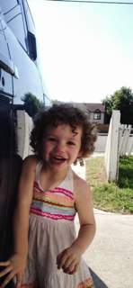
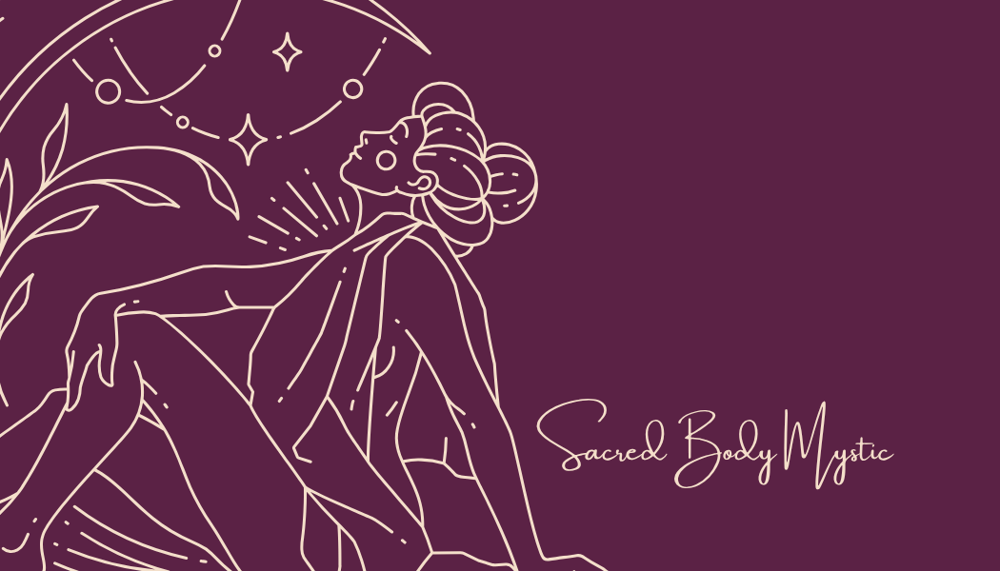

I'm Cindy — a dance floor slaying Conscious Entrepreneur and Mama Bear raising 2 feral children in the Salt Lake Valley.


I am a born healer with a passion for transforming lives with tools that took me from suffering to Bliss.
My interests include Breathwork,Creating immersive retreats & experiences, and playing as hard as I work!
My background is rooted in Shamanic Breathwork, Activation through Play & Embodiment, and Over a Decade of Experience in Natural Healing & Spirituality, Massage Therapy, & Isoteric Wisdom
I have offerings for everyone, from 1:1 retreat experiences to corporate team building to Private Group Immersions
Skills
- Business Management
- Project Management
- Wellness Coach
- Herbal Infusions & Plant Medicine
- Breathwork Facilitator
- Licensed Massage Therapist
- Social Media Marketing & Advertising
Work Experience
Massage Therapy Practice, 15+ years
Fractional CMO
Sales, Remote Sales
Group Facilitator, Presenter, Speaker
Event Coordinator, Host & MC
Permaculture Design Certified 2017
TECH-MOMS Graduate (HTML, CSS, Java, 2025)
